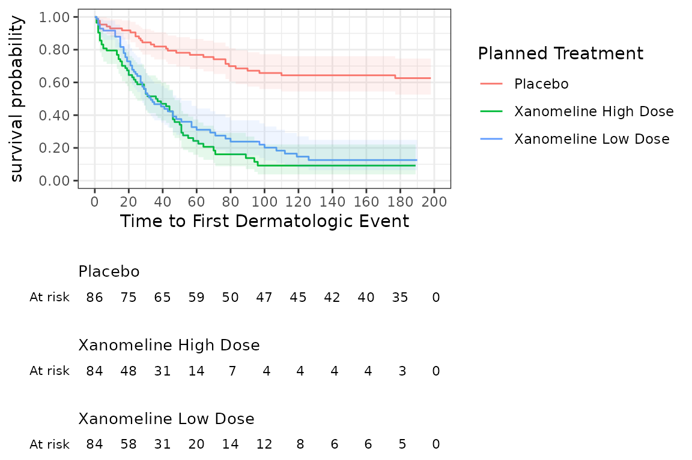

vignettes/CDISC_ADaM.Rmd
CDISC_ADaM.RmdThis very short tutorial illustrates how a standard time-to-event analysis can be done very efficiently when the data set adheres to the CDISC ADaM standard. A more detailed time-to-event analysis with a more braod overview of visR’s functionality is presented in another vignette.
# Constants
DATASET <- paste0("Analysis data - time to event")
# Global formatting options
options(digits = 3)
# Global ggplot settings
# theme_set(theme_classic())
# Global table settings
options(DT.options = list(pageLength = 10,
language = list(search = 'Filter:'),
scrollX = TRUE))
# load data set adtte already adhering to the CDISC ADaM standard
data(adtte)visR includes a wrapper function to easily display summary tables (e.g. tableone)
# Display a summary table (e.g. tableone)
tableone(adtte[,c("TRTP", "AGE")],
title = "Demographic summary" , datasource = DATASET)| Demographic summary | |
|---|---|
| Total (N=254) | |
| TRTP | |
| Placebo | 86 (33.9%) |
| Xanomeline High Dose | 84 (33.1%) |
| Xanomeline Low Dose | 84 (33.1%) |
| AGE | |
| Mean (SD) | 75.1 (8.25) |
| Median (IQR) | 77 (70-81) |
| Min-max | 51-89 |
| Missing | 0 (0%) |
| Data Source: Analysis data - time to event | |
A wrapper function to estimate a Kaplan-Meier curve that is compatible with %>% and purrr::map functions without losing traceability of the dataset name is included in visR. If a data set adhere to the CDISC ADaM standard, only a stratifier needs to be specified.
# Estimate a survival object
survfit_object <- estimate_KM(adtte, strata = "TRTP")
survfit_object
#> Call: survival::survfit(formula = survival::Surv(AVAL, 1 - CNSR) ~
#> TRTP, data = adtte)
#>
#> n events median 0.95LCL 0.95UCL
#> TRTP=Placebo 86 29 NA NA NA
#> TRTP=Xanomeline High Dose 84 61 36 25 47
#> TRTP=Xanomeline Low Dose 84 62 33 28 51Given a survival object visR includes several functions to easily to get additional information from the survival object (e.g. test statistics and p-values) and a general function to display a table (render).
# Display test statistics associated with the survival estimate
render(survfit_object %>% get_pvalue(), title = "P-values", datasource = DATASET)| P-values | |||
|---|---|---|---|
| Equality across strata | Chisq | df | p-value |
| Log-Rank | 60.27 | 2.00 | <0.001 |
| Wilcoxon | 48.02 | 2.00 | <0.001 |
| Tarone-Ware | 41.85 | 2.00 | <0.001 |
| Data Source: Analysis data - time to event | |||
A survival object can be plotted using the visR function plot. Additional information like confidence intervals and a risktable can be added to the plot.
# Create and display a Kaplan-Meier from the survival object and add a risktable
plot(survfit_object) %>% add_CI() %>% add_risktable()